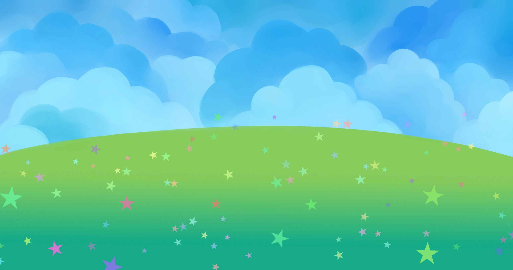
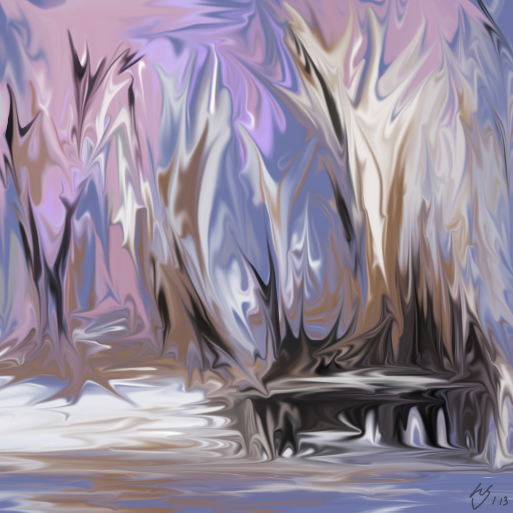

 
Claire Zhou Drawing on the Web
Welcome to my portfolio page!
HTML and CSS Drawing
SVG Icon System
CSS Animation
JavaScript Interaction
HTML Canvas
HTML Canvas Animation
HTML Canvas Objects
Web Audio API
Final Project